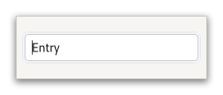

Class
GtkEntry
Description [src]
class Gtk.Entry : Gtk.Widget {
/* No available fields */
}GtkEntry is a single line text entry widget.

A fairly large set of key bindings are supported by default. If the entered text is longer than the allocation of the widget, the widget will scroll so that the cursor position is visible.
When using an entry for passwords and other sensitive information, it
can be put into “password mode” using gtk_entry_set_visibility().
In this mode, entered text is displayed using a “invisible” character.
By default, GTK picks the best invisible character that is available
in the current font, but it can be changed with
gtk_entry_set_invisible_char().
GtkEntry has the ability to display progress or activity
information behind the text. To make an entry display such information,
use gtk_entry_set_progress_fraction() or
gtk_entry_set_progress_pulse_step().
Additionally, GtkEntry can show icons at either side of the entry.
These icons can be activatable by clicking, can be set up as drag source
and can have tooltips. To add an icon, use
gtk_entry_set_icon_from_gicon() or one of the various other functions
that set an icon from an icon name or a paintable. To trigger an action when
the user clicks an icon, connect to the GtkEntry::icon-press signal.
To allow DND operations from an icon, use
gtk_entry_set_icon_drag_source(). To set a tooltip on an icon, use
gtk_entry_set_icon_tooltip_text() or the corresponding function
for markup.
Note that functionality or information that is only available by clicking on an icon in an entry may not be accessible at all to users which are not able to use a mouse or other pointing device. It is therefore recommended that any such functionality should also be available by other means, e.g. via the context menu of the entry.
CSS nodes
entry[.flat][.warning][.error]
├── text[.readonly]
├── image.left
├── image.right
╰── [progress[.pulse]]
GtkEntry has a main node with the name entry. Depending on the properties
of the entry, the style classes .read-only and .flat may appear. The style
classes .warning and .error may also be used with entries.
When the entry shows icons, it adds subnodes with the name image and the style class .left or .right, depending on where the icon appears.
When the entry shows progress, it adds a subnode with the name progress. The node has the style class .pulse when the shown progress is pulsing.
For all the subnodes added to the text node in various situations,
see GtkText.
GtkEntry as GtkBuildable
The GtkEntry implementation of the GtkBuildable interface supports a
custom PangoAttribute values for
this label.
An example of a UI definition fragment specifying Pango attributes:
<object class="GtkEntry">
<attributes>
<attribute name="weight" value="PANGO_WEIGHT_BOLD"/>
<attribute name="background" value="red" start="5" end="10"/>
</attributes>
</object>
The start and end attributes specify the range of characters to which the Pango attribute applies. If start and end are not specified, the attribute is applied to the whole text. Note that specifying ranges does not make much sense with translatable attributes. Use markup embedded in the translatable content instead.
Accessibility
GtkEntry uses the GTK_ACCESSIBLE_ROLE_TEXT_BOX role.
Instance methods
gtk_entry_get_current_icon_drag_source
Returns the index of the icon which is the source of the current DND operation, or -1.
gtk_entry_get_icon_storage_type
Gets the type of representation being used by the icon to store image data.
gtk_entry_get_icon_tooltip_markup
Gets the contents of the tooltip on the icon at the specified
position in entry.
gtk_entry_get_icon_tooltip_text
Gets the contents of the tooltip on the icon at the specified
position in entry.
gtk_entry_get_invisible_char
Retrieves the character displayed in place of the actual text in “password mode”.
gtk_entry_get_placeholder_text
Retrieves the text that will be displayed when entry
is empty and unfocused.
gtk_entry_get_progress_pulse_step
Retrieves the pulse step set with gtk_entry_set_progress_pulse_step().
gtk_entry_set_activates_default
Sets whether pressing Enter in the entry will activate the default
widget for the window containing the entry.
gtk_entry_set_icon_from_gicon
Sets the icon shown in the entry at the specified position from the current icon theme.
gtk_entry_set_icon_from_icon_name
Sets the icon shown in the entry at the specified position from the current icon theme.
gtk_entry_set_icon_from_paintable
Sets the icon shown in the specified position using a GdkPaintable.
gtk_entry_set_icon_tooltip_markup
Sets tooltip as the contents of the tooltip for the icon at
the specified position.
gtk_entry_set_icon_tooltip_text
Sets tooltip as the contents of the tooltip for the icon
at the specified position.
gtk_entry_set_input_hints
Set additional hints which allow input methods to fine-tune their behavior.
gtk_entry_set_input_purpose
Sets the input purpose which can be used by input methods to adjust their behavior.
gtk_entry_set_invisible_char
Sets the character to use in place of the actual text in “password mode”.
gtk_entry_set_progress_fraction
Causes the entry’s progress indicator to “fill in” the given fraction of the bar.
gtk_entry_set_progress_pulse_step
Sets the fraction of total entry width to move the progress bouncing block for each pulse.
gtk_entry_unset_invisible_char
Unsets the invisible char, so that the default invisible char
is used again. See gtk_entry_set_invisible_char().
Methods inherited from GtkAccessible (10)
gtk_accessible_get_accessible_role
Retrieves the GtkAccessibleRole for the given GtkAccessible.
gtk_accessible_reset_property
Resets the accessible property to its default value.
gtk_accessible_reset_relation
Resets the accessible relation to its default value.
gtk_accessible_reset_state
Resets the accessible state to its default value.
gtk_accessible_update_property
Updates a list of accessible properties.
gtk_accessible_update_property_value
Updates an array of accessible properties.
gtk_accessible_update_relation
Updates a list of accessible relations.
gtk_accessible_update_relation_value
Updates an array of accessible relations.
gtk_accessible_update_state
Updates a list of accessible states. See the GtkAccessibleState
documentation for the value types of accessible states.
gtk_accessible_update_state_value
Updates an array of accessible states.
Methods inherited from GtkBuildable (1)
Methods inherited from GtkCellEditable (3)
gtk_cell_editable_editing_done
Emits the GtkCellEditable::editing-done signal.
gtk_cell_editable_remove_widget
Emits the GtkCellEditable::remove-widget signal.
gtk_cell_editable_start_editing
Begins editing on a cell_editable.
Methods inherited from GtkEditable (23)
gtk_editable_delete_selection
Deletes the currently selected text of the editable.
gtk_editable_delete_text
Deletes a sequence of characters.
gtk_editable_finish_delegate
Undoes the setup done by gtk_editable_init_delegate().
gtk_editable_get_alignment
Gets the alignment of the editable.
gtk_editable_get_chars
Retrieves a sequence of characters.
gtk_editable_get_delegate
Gets the GtkEditable that editable is delegating its
implementation to.
gtk_editable_get_editable
Retrieves whether editable is editable.
gtk_editable_get_enable_undo
Gets if undo/redo actions are enabled for editable.
gtk_editable_get_max_width_chars
Retrieves the desired maximum width of editable, in characters.
gtk_editable_get_position
Retrieves the current position of the cursor relative to the start of the content of the editable.
gtk_editable_get_selection_bounds
Retrieves the selection bound of the editable.
gtk_editable_get_text
Retrieves the contents of editable.
gtk_editable_get_width_chars
Gets the number of characters of space reserved for the contents of the editable.
gtk_editable_init_delegate
Sets up a delegate for GtkEditable.
gtk_editable_insert_text
Inserts length bytes of text into the contents of the
widget, at position position.
gtk_editable_select_region
Selects a region of text.
gtk_editable_set_alignment
Sets the alignment for the contents of the editable.
gtk_editable_set_editable
Determines if the user can edit the text in the editable widget.
gtk_editable_set_enable_undo
If enabled, changes to editable will be saved for undo/redo actions.
gtk_editable_set_max_width_chars
Sets the desired maximum width in characters of editable.
gtk_editable_set_position
Sets the cursor position in the editable to the given value.
gtk_editable_set_text
Sets the text in the editable to the given value.
gtk_editable_set_width_chars
Changes the size request of the editable to be about the
right size for n_chars characters.
Properties
Gtk.Entry:enable-emoji-completion
Whether to suggest Emoji replacements for :-delimited names
like :heart:.
Gtk.Entry:placeholder-text
The text that will be displayed in the GtkEntry when it is empty
and unfocused.
Gtk.Entry:primary-icon-storage-type
The representation which is used for the primary icon of the entry.
Gtk.Entry:progress-pulse-step
The fraction of total entry width to move the progress bouncing block for each pulse.
Gtk.Entry:secondary-icon-storage-type
The representation which is used for the secondary icon of the entry.
Gtk.Entry:secondary-icon-tooltip-markup
The contents of the tooltip on the secondary icon, with markup.
Gtk.Entry:visibility
Whether the entry should show the “invisible char” instead of the actual text (“password mode”).
Properties inherited from GtkWidget (34)
Gtk.Widget:can-focus
Whether the widget or any of its descendents can accept the input focus.
Gtk.Widget:can-target
Whether the widget can receive pointer events.
Gtk.Widget:css-classes
A list of css classes applied to this widget.
Gtk.Widget:css-name
The name of this widget in the CSS tree.
Gtk.Widget:cursor
The cursor used by widget.
Gtk.Widget:focus-on-click
Whether the widget should grab focus when it is clicked with the mouse.
Gtk.Widget:focusable
Whether this widget itself will accept the input focus.
Gtk.Widget:halign
How to distribute horizontal space if widget gets extra space.
Gtk.Widget:has-default
Whether the widget is the default widget.
Gtk.Widget:has-focus
Whether the widget has the input focus.
Gtk.Widget:has-tooltip
Enables or disables the emission of the ::query-tooltip signal on widget.
Gtk.Widget:height-request
Override for height request of the widget.
Gtk.Widget:hexpand
Whether to expand horizontally.
Gtk.Widget:hexpand-set
Whether to use the hexpand property.
Gtk.Widget:layout-manager
The GtkLayoutManager instance to use to compute the preferred size
of the widget, and allocate its children.
Gtk.Widget:margin-bottom
Margin on bottom side of widget.
Gtk.Widget:margin-end
Margin on end of widget, horizontally.
Gtk.Widget:margin-start
Margin on start of widget, horizontally.
Gtk.Widget:margin-top
Margin on top side of widget.
Gtk.Widget:name
The name of the widget.
Gtk.Widget:opacity
The requested opacity of the widget.
Gtk.Widget:overflow
How content outside the widget’s content area is treated.
Gtk.Widget:parent
The parent widget of this widget.
Gtk.Widget:receives-default
Whether the widget will receive the default action when it is focused.
Gtk.Widget:root
The GtkRoot widget of the widget tree containing this widget.
Gtk.Widget:scale-factor
The scale factor of the widget.
Gtk.Widget:sensitive
Whether the widget responds to input.
Gtk.Widget:tooltip-markup
Sets the text of tooltip to be the given string, which is marked up with Pango markup.
Gtk.Widget:tooltip-text
Sets the text of tooltip to be the given string.
Gtk.Widget:valign
How to distribute vertical space if widget gets extra space.
Gtk.Widget:vexpand
Whether to expand vertically.
Gtk.Widget:vexpand-set
Whether to use the vexpand property.
Gtk.Widget:visible
Whether the widget is visible.
Gtk.Widget:width-request
Override for width request of the widget.
Properties inherited from GtkAccessible (1)
Properties inherited from GtkCellEditable (1)
Properties inherited from GtkEditable (8)
GtkEditable:cursor-position
The current position of the insertion cursor in chars.
GtkEditable:editable
Whether the entry contents can be edited.
GtkEditable:enable-undo
If undo/redo should be enabled for the editable.
GtkEditable:max-width-chars
The desired maximum width of the entry, in characters.
GtkEditable:selection-bound
The position of the opposite end of the selection from the cursor in chars.
GtkEditable:text
The contents of the entry.
GtkEditable:width-chars
Number of characters to leave space for in the entry.
GtkEditable:xalign
The horizontal alignment, from 0 (left) to 1 (right).
Signals
Signals inherited from GtkWidget (13)
GtkWidget::destroy
Signals that all holders of a reference to the widget should release the reference that they hold.
GtkWidget::direction-changed
Emitted when the text direction of a widget changes.
GtkWidget::hide
Emitted when widget is hidden.
GtkWidget::keynav-failed
Emitted if keyboard navigation fails.
GtkWidget::map
Emitted when widget is going to be mapped.
GtkWidget::mnemonic-activate
Emitted when a widget is activated via a mnemonic.
GtkWidget::move-focus
Emitted when the focus is moved.
GtkWidget::query-tooltip
Emitted when the widgets tooltip is about to be shown.
GtkWidget::realize
Emitted when widget is associated with a GdkSurface.
GtkWidget::show
Emitted when widget is shown.
GtkWidget::state-flags-changed
Emitted when the widget state changes.
GtkWidget::unmap
Emitted when widget is going to be unmapped.
GtkWidget::unrealize
Emitted when the GdkSurface associated with widget is destroyed.
Signals inherited from GObject (1)
GObject::notify
The notify signal is emitted on an object when one of its properties has its value set through g_object_set_property(), g_object_set(), et al.
Signals inherited from GtkCellEditable (2)
GtkCellEditable::editing-done
This signal is a sign for the cell renderer to update its
value from the cell_editable.
GtkCellEditable::remove-widget
This signal is meant to indicate that the cell is finished
editing, and the cell_editable widget is being removed and may
subsequently be destroyed.
Signals inherited from GtkEditable (3)
GtkEditable::changed
Emitted at the end of a single user-visible operation on the contents.
GtkEditable::delete-text
Emitted when text is deleted from the widget by the user.
GtkEditable::insert-text
Emitted when text is inserted into the widget by the user.
Class structure
struct GtkEntryClass {
GtkWidgetClass parent_class;
void (* activate) (
GtkEntry* entry
);
}Class structure for GtkEntry. All virtual functions have a default
implementation. Derived classes may set the virtual function pointers for the
signal handlers to NULL, but must keep get_text_area_size and
get_frame_size non-NULL; either use the default implementation, or provide
a custom one.
Class members
parent_class: GtkWidgetClassThe parent class.
activate: void (* activate) ( GtkEntry* entry )- No description available.